Le numéro 24 de la revue Méthode a publié un article sur le lieutenant A.S. Strakhov, qui a été exécuté en Crimée en 1920. Le destin de son frère Ivan, qui a survécu à l'ère de la terreur et a préservé la foi orthodoxe et les convictions monarchiques, mérite également l'attention.
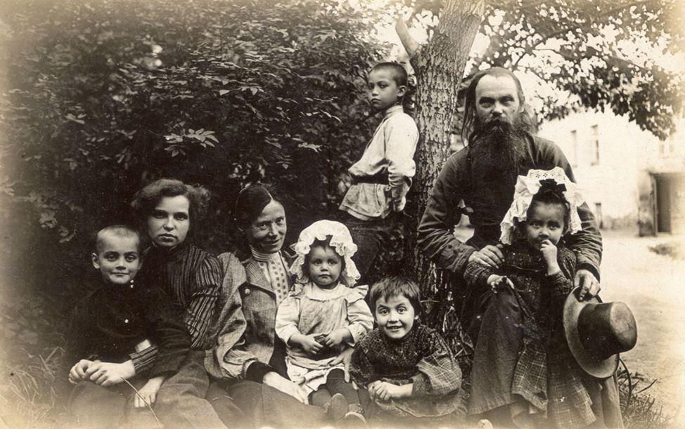
La famille de l'archiprêtre Serge Ivanovitch Strakhov (1910)
(Ivan, sa tante Leonilla Ivanovna, l'éducatrice, Catherine, Nina, Alexandre, le père Serge, Nadezhda)
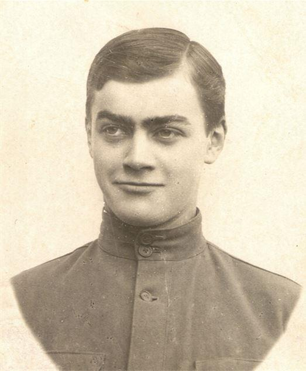Ivan est né durant le service de son père (à l'époque diacre Serge) dans l'église Saint-Nicolas de Bolshaya Molchanovka (détruite en 1934). En septembre 1910, Vanya Strakhov entra dans le 5e gymnase1 de Moscou. Les poètes Boris Pasternak et Vladimir Mayakovsky ainsi que le philosophe Ivan Ilyin ont étudié dans ce gymnase à différentes époques.
En 1913, lors de la célébration du 300e anniversaire de la Maison des Romanov, le lycéen Ivan Strakhov a pu à, deux reprises, apercevoir l'empereur Nicolas II et sa famille. La première fois que cela s'est produit, c'était sur la place Loubianka. Les étudiants du gymnase qui s'y rendaient regardaient le passage de l'empereur depuis le rebord d’un balcon.
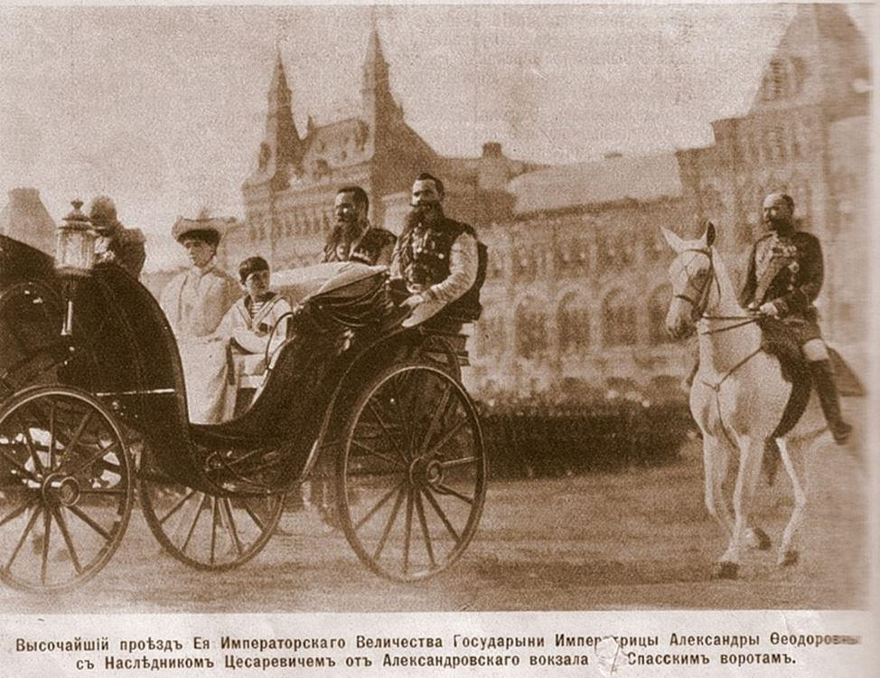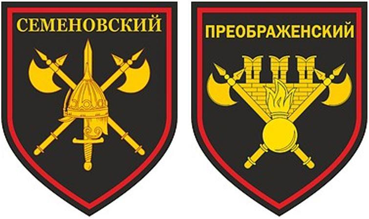Pour la deuxième fois, I. Strakhov a eu l'occasion de voir le tsar non de loin comme simple spectateur, mais tout à fait officiellement, lorsqu’il va participer à la marche cérémonielle au Kremlin dans le cadre du « Potechnye » (compagnie de jeunes gentilshommes). C'était le nom du mouvement de jeunesse de toutes classes, qui réunissait les jeunes dans les « régiments de jeunes gentilshommes ». Ils ont obtenu leur nom en mémoire des régiments de jeunes gentilshommes de Pierre le Grand, qui devinrent plus tard la base de la Garde russe - les régiments Semyonovsky et Preobrazhensky.
Le souverain salua chaque école militaire, gymnase et école qui passaient, tenant sa main sous la visière : « Bonjour, les gars ! » On lui répondit : « Nous vous souhaitons une bonne santé, Votre Majesté ! » L'empereur avait l'air très modeste, « sans aucune pompe de sa part », comme le disait Ivan Sergueïevitch.
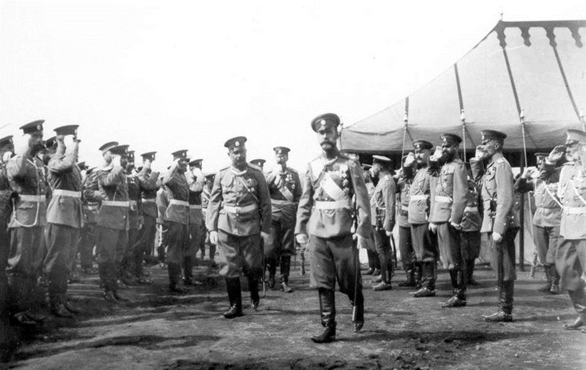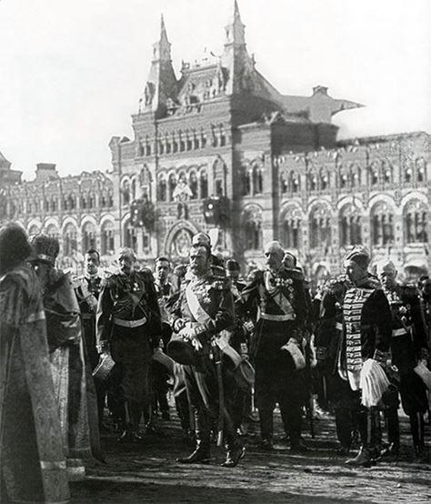Ivan Strakhov a porté le souvenir des minutes de contemplation du Souverain avec respect tout au long de sa vie.
Pendant la Première Guerre mondiale, qui a commencé l'année suivante, un hôpital militaire a été installé dans le 5e gymnase, et les élèves ont été transférés au 9e gymnase de Medvednikovs dans la ruelle Starokonyushenny, abandonnant la moitié des locaux.
En octobre-novembre 1917, I. Strakhov, élève de la 8e (dernière) année du gymnase, prit part au soulèvement des cadets à Moscou.
À ce stade de la Révolution, qui débute en février 1917 et conduit à l'abdication de l'empereur Nicolas II et à la désorganisation de la vie de l'État, le gouvernement provisoire, présidé par A.F. Kerensky, qui avait perdu les derniers vestiges et même l'apparence de légitimité après avoir proclamé illégalement la Russie république avant la décision de l'Assemblée constituante, vivait ses derniers jours. Dans la nuit du 24 au 25 octobre 1917, il a été renversé à la suite d'un coup d'État à Petrograd, organisé par le Parti bolchevique sous la direction de V.I. Lénine et L.D. Trotsky.
En octobre 1917, un ami des Strakhov, Konstantin Dombrovsky, qui a étudié à l'école militaire de Kazan, est venu à Moscou de Kazan. Il a parlé des affrontements sanglants entre les cadets et les bolcheviks à Kazan. Cette histoire a influencé I.S. Strakhova. Il a décidé qu'il devait rejoindre la résistance anti-bolchevique.
Le matin du 27 octobre (9 novembre), des coups de feu ont été entendus en provenance de Lefortovo. À 9 heures du matin, le père Sergiy Strakhov partit pour le service dans l'église de Sainte Irène. Mais Ivan n'est pas allé à l'église, a mis son uniforme de gymnase et est allé à l'école militaire d’Alexandre I.
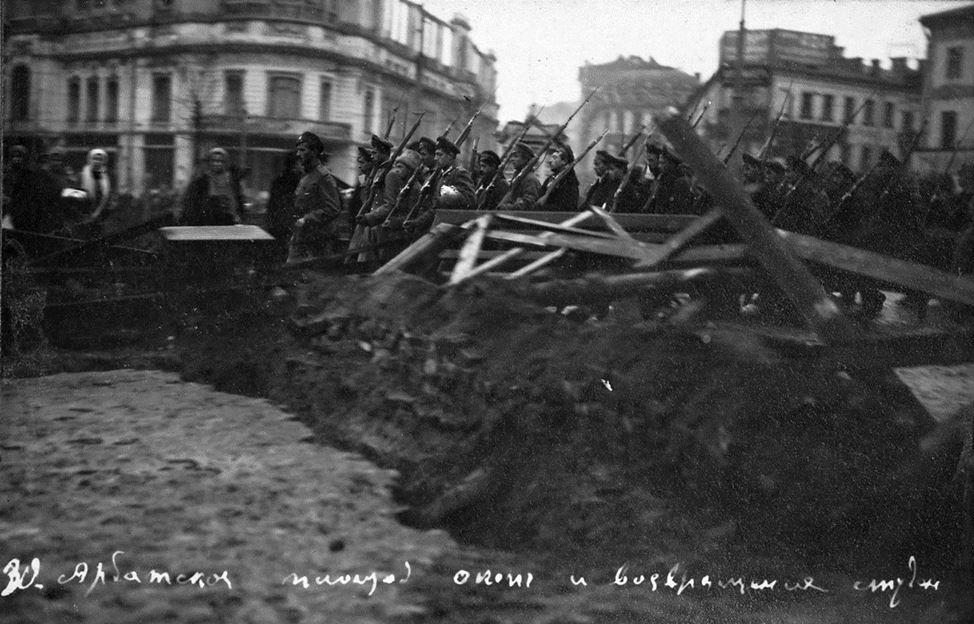
Place Arbatskaïa lors du soulèvement des Junkers à Moscou (octobre 1917)
Il a dû faire le tour des rues environnantes en choisissant des détours. À 11 heures, Ivan atteignit enfin la place d’Arbat. Mais arrivé là, il se rend compte qu'il n'avait aucun document avec lui. Dans sa hâte et son excitation, il avait oublié de les prendre. Toutefois, les sentinelles le laissent entrer à l'école militaire Alexandre I et lui indiquent où il peut s'inscrire comme volontaire. Il s’inscrit dans une brigade commandée par son professeur du gymnase, le capitaine V.N. Gogel, qui a reçu des armes et des uniformes et l’envoie au restaurant « Prague », où les cadets sont stationnés.
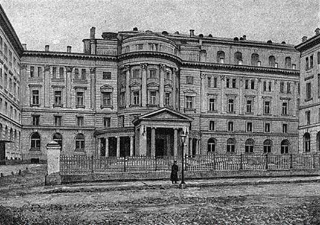Bientôt, il est envoyé pour sa première mission - patrouiller dans l'Arbat, puis il est transféré dans le bâtiment du Conservatoire de la rue Bolshaya Nikitskaya.
Des attaques rouges étaient attendues du centre et de la porte Nikitsky. De chaque côté du trottoir du Conservatoire se trouvaient deux nids de mitrailleuses. Armés par des cadets, les mitrailleuses sont protégées par des tôles.
Ivan et ses associés sont périodiquement envoyés pour patrouiller Arbat, notamment la place Arbat et la rue Nikitskaya. Il a par ailleurs mission de garder les prisonniers. Il participe directement aux batailles des 29 et 30 octobre. Selon lui, les Lettons attaquaient les junkers qui se trouvaient à Bolshaya Nikitskaya depuis le centre. L'apparition de certains indiquait qu'ils étaient en état d'ébriété.
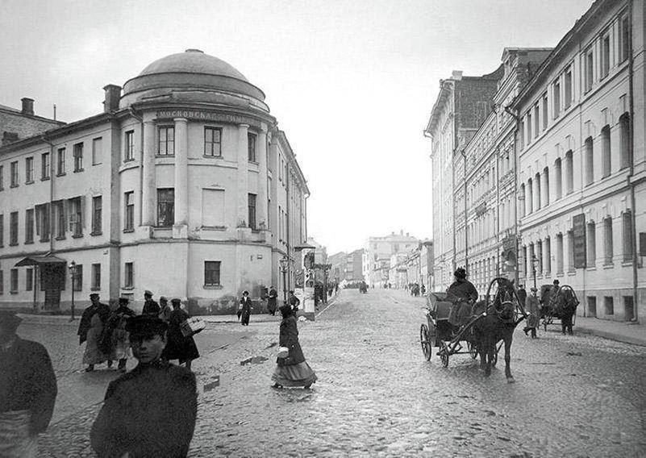
Le bâtiment du V Gymnasium de Moscou dans l'ancienne maison de la princesse Gagarina. (Démoli dans les années 1960).
Les 30 et 31 octobre, les Rouges, qui avaient reçu des renforts, ont commencé à s'imposer. Les 1er et 2 novembre, le Kremlin de Moscou, toujours sous le contrôle des cadets, subit des tirs d'artillerie.
Il se déroule alors des batailles féroces sur Bolshaya Nikitskaya. Mais les forces sont inégales. Le 2 novembre, le commandant du district militaire de Moscou, le colonel K.I. Ryabtsev, qui avait auparavant constamment fait preuve d'indécision et avait déjà perdu la confiance de ses subordonnés, donne l'ordre de se rendre et remet aux Bolcheviks l'école militaire d'Alexandre I. On annonce aux cadets et aux volontaires que la résistance doit prendre fin. Ils sont libérés du serment et sont invités à se sauver du mieux qu'ils peuvent. Ivan réussit à se cacher sur le territoire de l'église Saint-Nicolas sur les sables (détruite en 1932), puis à rentrer chez lui.
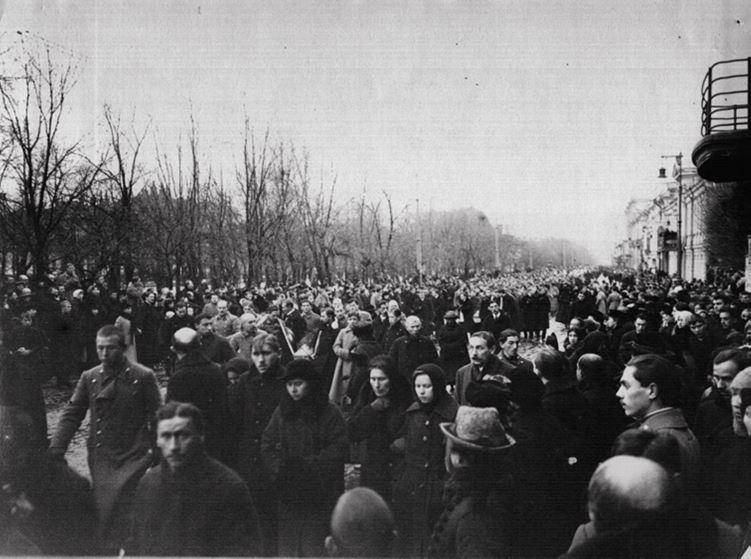
Funérailles des Junkers morts dans les combats avec les bolcheviks (novembre 1917)
Il recommence à suivre des cours. Deux semaines plus tard, le directeur du Gymnase Sokolov convoque les lycéens et leur annonce que les listes de volontaires qui s'étaient joints au soulèvement des cadets étaient tombées entre les mains des Bolcheviks. Le directeur recommande aux lycéens impliqués dans le soulèvement de quitter temporairement Moscou, car leur vie était en danger.
I. Strakhov suit les conseils du directeur et part début décembre pour rester avec ses proches à Volokolamsk.
Après avoir obtenu son diplôme du Gymnase I.S. Strakhov, en 1918, il part servir comme chauffeur adjoint au dépôt de Moscou du chemin de fer du Nord. En 1920, il entre à l'École technique supérieure de Moscou (anciennement l'École technique impériale de Moscou, à laquelle son frère A.S. Strakhov est entré en 1916). Là, il étudie jusqu'à la troisième année, quand en 1924 il est « purgé comme un élément ennemi » en raison du fait qu'il était le fils d'un prêtre. Pourtant en 1929-1930 il réussit à obtenir son diplôme de l'Institut de l'aviation de Moscou en tant qu'étudiant externe.
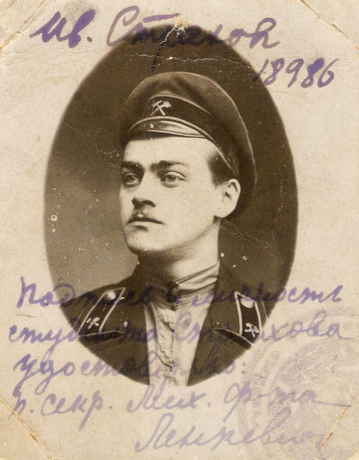
Ivan Strakhov dans l'uniforme d'un employé du chemin de fer (1919)
De juin à décembre 1924, I.S. Strakhov travaille dans l'usine du Département des Inventions militaires en tant que dessinateur-concepteur.
La même année, des employés de la Direction politique principale (GPU) l'arrêtent pour la première fois dans son appartement, et il passe plusieurs mois en détention provisoire.
Lorsque les officiers du GPU sont venus le chercher, Ivan Strakhov a pensé que la raison était son implication épisodique dans un groupe secret de jeunes anticommunistes. Un de ses camarades de classe, qui était au courant de la participation d'Ivan au soulèvement des cadets, en 1918, lui avait suggéré de mettre des affiches contre le pouvoir soviétique. I.S. Strakhov avait accepté, mais n'avait pu accrocher qu'une seule affiche. Il cacha le reste dans les draps de sa chambre et dans une bibliothèque où elles étaient dissimulées entre des livres. Au moment de son arrestation, la pensée lui traversa l'esprit que leur « complot » avait été découvert. Bien sûr, si les affiches avaient été trouvées lors d'une fouille, le résultat aurait pu être extrêmement déplorable pour Ivan. Mais il a de nouveau eu de la chance. Les tracts n'ont pas été retrouvés et les enquêteurs ne connaissaient pas les faits de ses activités en octobre-novembre 1917 et de ses liens avec la clandestinité anti-bolchevique. Tous les interrogatoires concernaient des problèmes mineurs, à son avis. Cette fois, l'affaire se limite à plusieurs mois de détention provisoire et l'affaire n'étant pas parvenue au tribunal – il fut « relâché après enquête ».
En mai 1925, I.S. Strakhov travaille à l'usine d'aviation d'État n ° 1 (avant la révolution de 1917 - l'usine d'automobiles et d'avions « Dux ») comme dessinateur, puis en octobre de la même année, il y devient ingénieur calcul.
En 1928, Ivan épouse Natalia Alexandrovna, née Osipovskaya, une ambulancière. En 1929, leur fille Elena est née et le beau-père de I.Strakhov, A.A. Osipovsky, vétérinaire, a été abattu pour "sabotage".
Cette même année, Ivan Strakhov poursuivit ses travaux d'ingénierie et de conception à l'usine aéronautique n ° 25 « Samolet »2, qui a été rapidement abolie et rattachée à l'usine aéronautique n ° 39 du nom de V.R. Menzhinsky3. C'est là qu'a été créé le Bureau central de conception (TsKB-39) de l'OGPU4 , qui utilisent les travaux de concepteurs et d'ingénieurs d'avions prisonniers («le premier« sharaga », qui était initialement à la prison de Butyrka, dans les locaux de l'ancienne prison Église de l'Intercession)5.
Le 17 décembre 1930, il est renvoyé de l'usine. Le 20 décembre 1930, un ordre est émis pour arrêter I.S. Strakhov et 5 autres accusés de cette liste en vertu de l'article 58/10 du Code pénal - « Propagande ou agitation contenant un appel à renverser, saper ou affaiblir le pouvoir soviétique ou à commettre certains crimes contre-révolutionnaires (articles 58-2-58-9 du présent Code), ainsi que la distribution ou la production ou le stockage de littérature du même contenu. »
Selon l'enquêteur, il « était suffisamment exposé pour que, tout en travaillant dans les usines de l'industrie aéronautique et au Bureau central de conception, qui revêtaient une importance militaire, et connaissant tout le matériel sur les nouveaux modèles d'avions expérimentaux, ainsi que les armes, il a révélé ceux parmi les éléments étrangers et anti-soviétiques, sauf En outre, il a mené une agitation anti-soviétique parmi les employés de l'usine, pour laquelle il a été expulsé de l'usine n ° 39 par l'Inspection régionale des travailleurs et des paysans de Moscou en 1 catégorie, c'est-à-dire dans une infraction prévue au paragraphe 10 de l'article 58 et à l'article 121 (« Divulgation, communication, transfert ou collecte aux fins de transmission par un fonctionnaire d'informations non susceptibles de divulgation ») Code pénal ».
Le 15 janvier 1931, un acte d'accusation est émis et le 3 février suivant, une réunion spéciale au collège de l'OGPU décide d'expulser les six condamnés en vertu de l'article 58/10 du Code pénal de la Russie Soviétique par l'intermédiaire de la représentation plénipotentiaire de l'OGPU en Sibérie occidentale pour une période de 3 ans, en comptant cette période à partir de la date de l'arrestation le 19 décembre 1930.
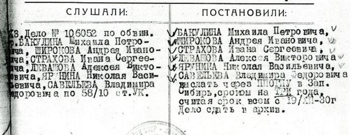
Condamnation de I. Strahov, V. Saveliev et leurs collègues. 3 février 1931
À cette époque, de tels verdicts relativement « doux » étaient encore possibles. Bientôt, les répressions deviendront beaucoup plus brutales et commenceront à détruire non seulement les citoyens ordinaires, mais aussi leurs propres organisateurs. Ainsi, tous les membres de la « troika », qui accusait I.S. Strakhov et ses collègues (ainsi que de nombreux autres spécialistes honnêtes et hautement qualifies), périrent alors eux-mêmes dans les meules de la terreur.
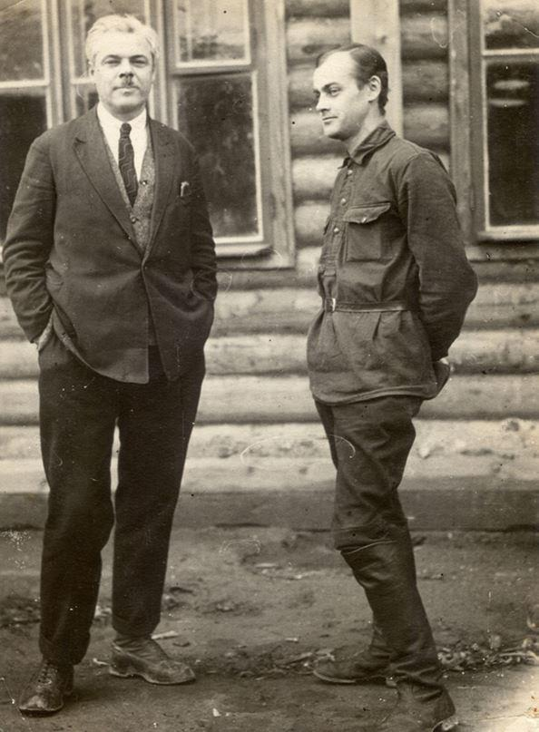
Ivan Strakhov (à droite) et l'un des fondateurs de la construction aéronautique russe, Vladimir Saveliev, sont en exil. Printemps 1931
Au total, I.Strakhov n'aura pas passé 3 ans en prison et en exil, mais près de 16 ans , de 1931 à 1946.
Ils sont emmenés à Novossibirsk pendant 2 semaines et demie. Sur le chemin, un condamné se pend.
Finalement, ils sont conduits à la prison de Novossibirsk. Dans un gel de -40 degrés, ils attendent d'être placés dans une nouvelle chambre d'hivernage. Là, ils sont gardés pendant une semaine, puis décident d’appeler un par un le chef du département économique de l'OGPU du Territoire de Sibérie occidentale. Heureusement, ils n’ont pas été condamnés aux travaux forcés meurtriers, mais à travailler dans le «bureau de conception et de construction» - le bureau spécial de conception n ° 14.
C'était l'un des « sharags » engagés dans la conception d'équipements pour l'extraction du charbon à Kuzbass.
Le camarade principal et « complice » d'Ivan Sergueïevitch Strakhov dans l'affaire n ° 106052, est l'un des fondateurs de l'industrie aéronautique russe, Vladimir Fedorovitch Savelyev (1889-1960) qui était également affecté au bureau de conception et de construction n ° 14.
C'était un scientifique russe exceptionnel. En 1912, il participait à la première guerre des Balkans (septembre 1912 - mai 1913), testant et remettant aux forces armées serbes les biplans Farman fabriqués par l'usine russe de Dux. En février 1913, à l'issue d'un vol de trois jours au départ de Niš, il survécut à un crash dans les environs de Belgrade.
De retour dans son pays natal, V.F. Savelyev, devenu mécanicien senior à l'usine de transport russo-baltique (Russobalta), avait participé à l'assemblage et aux essais du premier avion russe « Ilya de Mourom », conçu par le grand concepteur d'avions I.I. Sikorsky. En août 1914, il était nommé ingénieur mécanique principal de la 2e compagnie d'aviation du parc d'aviation de Smolensk. En septembre 1915, avec Vladislav Zalevsky, il avait conçu un avion pour les besoins militaires6. Sur cette base, un avion de reconnaissance monomoteur biplace sera créé.
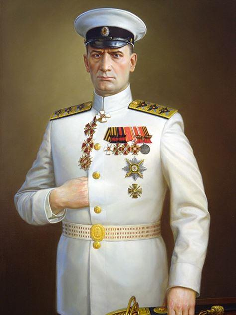Pendant la guerre civile V.F. Saveliev combat d'abord aux côtés des Blancs dans les troupes subordonnées à l'amiral A.V. Koltchak, mais est ensuite passé du côté des Rouges. Il devint membre du Comité révolutionnaire et, après la prise d'Irkoutsk par les Bolcheviks, il est nommé au poste de chef de l'aviation de l'armée soviétique de Sibérie orientale formée en janvier 1920.
À la fin de la guerre civile, V.F. Saveliev est retourné aux travaux d'ingénierie et de conception. En 1921-1923, il construit une version modernisée de son avion. En 1920-1922. Il est affecté à la Direction principale de la Force aérienne rouge ouvrière et paysanne puis, de 1923 à 1926, promu chef du bureau d'études de l'usine d'aviation d'État n ° 1.
Après cela, il s’était dans la conception au bureau d'études du « roi des avions de chasse » N.N. Polikarpov (1892-1944).
Pourtant, durant les années 1929-1930, malgré les succès scientifiques remportés, N.N. Polikarpov et V.F. Savelyev, comme de nombreux autres scientifiques, sont victimes de la répression.
En 1931, V.F. Saveliev et I.S. Strakhov conçoivent de réaliser ensemble un pont suspendu sur la rivière Abu dans le village d'Aralichevo près de Novokuznetsk, dans la région de Kemerovo - le seul pont suspendu en bois de Sibérie.
Ils sont convoqués pour présenter leur projet. La mission est validée et ils sont renvoyés chez eux pour se préparer. Afin d’aller plus vite, ils décident de rejoindre la gare de Novossibirsk à cheval. La neige couvre alors les toits, les routes et les champs. Durant le trajet, devant une mine de prospecteur, ils trouvent le corps d'un homme gelé au sommet d'un arbre. Strakhov est alors convaincu que l'histoire du baron C. von Munchausen où il attache un cheval à un poteau dans un champ enneigé en Russie, et le matin, lorsque la neige a fondu, le voit pendu du haut du clocher, n'était finalement pas tellement invraisemblable.
Partis de Novokuznetsk, V.F. Saveliev et I.S. Strakhov arrivent à Aralichevo le 24 mars 1931. Là, ils dessinnent en 12 jours, en relations avec le spécialiste américain M. Glan (6), les plans d’un pont suspendu en bois massif.
V.F. Savelyev rapporte au chef du Bureau d'études et de construction n ° 14 B.S. Maslennikov: «… avec le camarade Strakhov, nous avons commencé à concevoir un pont suspendu sur la rivière. Abu. Le même jour, l'ingénieur américain de la société Flane, M. Glan, est invité à Aralichevo en tant que consultant, qui approuve le projet de pont, à savoir un type de pont-suspendu avec 2 cordes de chaque côté.8.
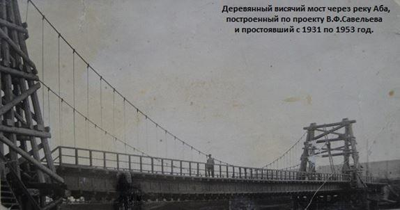Le pont mesure 75 mètres de long et 5 mètres de large. Il est construit en 2 mois et va servir 22 ans - jusqu'en 1953. Pour ce travail V.F. Saveliev et I.S. Strakhov ont été primés.
À partir de 1932, I.S. Strakhov travaille à Sibmashstroy en tant que chef du bureau d'études, puis en octobre 1934 comme ingénieur du département de génie thermique. Le 14 août 1936, il démissionne de l'entreprise aéronautique n ° 153 et se reconvertit à l'industrie de l'or en Khakassie. Là, il est responsable d'un atelier de réparation mécanique puis est engagé dans la restauration d'une centrale électrique thermique après un accident.
En 1939, I.S. Strakhov est de nouveau condamné à 6 mois de travaux forcés. Selon la propre histoire d'Ivan Sergeevich, sa faute était la suivante : un certain pompier a manqué de travail. Cela a été signalé au directeur de la mine. I.S. Strakhov a reçu un extrait de l'ordre pour l'administration minière - d'accepter un salaire réduit en tant qu'ouvrier et, après 3 mois, de passer au poste de chauffeur. Quelqu'un a dénoncé au parquet du district de Shirinsky en Khakassie une violation de la législation sur la discipline du travail9. Il s'avère que le chauffeur aurait dû être puni plus sévèrement. L'enquêteur a vu l'ordre. Mais la "troïka" a prononcé une condamnation : pour avoir accepté un ivrogne - six mois de travaux forcés avec une déduction de 25% du salaire. I.S. Strakhov a été envoyé à la mine d’or de Saralinsky dans la région d'Ordzhonikidze en Khakassie.
Il ira ensuite travailler comme chef de l'atelier mécanique de la mine Ivanovsky dans la région de la rivière Sarala, et y réalisera des dessins et des plans.
À partir de 1939, I.S. Strakhov reçoit du « Khakass Gold Trust » du Commissariat populaire de la métallurgie non ferreuse de l'URSS "une offre qui ne peut être refusée" - rejoindre la mine de Balakhchin. Au début, il tente d'esquiver. Il faut dire que les autorités font preuve de « patience » mais après deux rappels, ils lui font parvenir une lettre avec la question : "Indiquez quand envoyer une voiture pour vous ?" Rien à faire, il ne peut plus y échapper. Là, Ivan Sergeevich travaille durant la Grande Guerre patriotique, jusqu'en avril 1945. Il peut enfin quitter cette usine très dangereuse après avoir été gravement empoisonné par l’inhalation de cyanure de sodium. Il reçoit alors un ordre médical d’évacuation.
Ayant eu l'opportunité de quitter la Sibérie pour Kiev, I.S. Strakhov est rapidement employé par l'usine de meubles de Zhytomyr.
Sa femme a pu obtenir la permission de venir à Kolomna. Puis il s'installe à Voskresensk près de Moscou et entre dans la cimenterie de Voskresensk10. Après sa retraite, il continue de vivre avec sa femme dans un petit appartement près de la gare « Cement-Géant ».
En tant qu'enfant, chaque visite à mon grand-père Ivan est devenue un jour heureux pour moi. Lui et sa femme vivaient très modestement, mais une atmosphère d'amour et de bonne volonté régnait dans leur maison qu'il me donnait l’impression d’être dans un endroit paradisiaque. C'était intéressant pour moi d'écouter les conversations d'adultes, les mémoires de I. Strakhov. Bien sûr, je n'ai pas tout compris, mais quelque chose d'important est entré dans mon âme. Ce vieil homme tranquille était vénéré par moi comme un héros qui a passé les épreuves les plus dures et préservé sa foi, sa haute dignité et ses convictions intégrales.
I. Strakhov était une personne orthodoxe profondément religieuse. Je me souviens avec quelle révérence il a préparé la confession et la communion des Saints Mystères du Christ, quand, en 1991, j'ai conclu un accord avec le prêtre et organisé sa visite à Voskresensk le mardi 9 avril.
La mort de sa femme est devenue un grand chagrin pour Ivan Sergeevich. Mais lui, laissé sans compagnon fidèle dans la vie, n'a pas sombré (comme cela arrive souvent avec les personnes âgées veuves), et n'a pas perdu sa netteté au quotidien, son hospitalité et les manières les plus agréables.
La fille de I. Strakhov, Elena, qui vivait à Podolsk, rendait régulièrement visite à son père et l'aidait à faire le ménage. Des employés des services sociaux sont également venus le voir. En raison de sa déficience visuelle, il a progressivement perdu la capacité d'aller à l'épicerie. Mais à la maison, il dirigeait lui-même la maison, cuisinait pour lui-même, faisait le ménage. Il n'y avait jamais la moindre trace de désordre dans son appartement.
Jusqu'à la toute fin de ses jours, I. Strakhov a conservé une parfaite clarté de pensée et une très bonne mémoire. Quelque chose, bien sûr, j'ai oublié ou pourrais être légèrement confus, mais surtout je me suis souvenu des noms des ecclésiastiques, des enseignants, des camarades de classe, des collègues; les noms des unités militaires; les noms exacts des institutions dans lesquelles il a servi; même le numéro de téléphone qui, pendant le soulèvement des cadets d'octobre 1917, a appelé mon père à la maison du restaurant de Prague: 4-27-30 (je l'ai vérifié plus tard dans le livre «Toute la Moscou» pour 1915 - c'est vrai!). Il a cité de mémoire Homère en grec ancien et Virgile en latin; récité les poèmes de poètes russes qu'il avait appris au Gymnase.
Ivan Strakhov pouvait à peine voir, mais sa télévision était constamment allumée et il écoutait attentivement les informations et divers programmes. Il adorait parler et argumenter sur des sujets politiques, et ses opinions étaient toujours clairement formulées et motivées.
Il était resté un monarchiste convaincu. Quand je lui ai demandé à quoi les cadets et les volontaires adhéraient, il a répondu fermement : « Monarchistes. Après tout, nous allions à une mort certaine. La moitié au moins a été tuée. Environ un millier de fidèles ont perdu quelque chose. (…) Je n'avais pas du tout l'impression que cela (sa participation au soulèvement de 1917 - AZ) était juste une impulsion de garçon. Il y avait quelque chose de plus. Je n'ai sympathisé ni avec Kerensky ni avec les Bolcheviks. Au fond, j'étais le monarchiste le plus convaincu. Et maintenant, je ne ressens plus la moindre sympathie [pour les révolutionnaires et les républicains]. »
Pour lui, le fait que les jeunes aillent à une mort certaine était la preuve de leur engagement dans la monarchie. Probablement, dans une certaine mesure, c'est la défense d’un idéal. En fait, tous les junkers n'étaient pas des monarchistes. Mais son esprit ne pouvait supporter l'idée qu'on puisse mourir non pour la foi, le tsar et la patrie, mais pour le gouvernement provisoire, A. Kerensky et l'Assemblée constituante ...
En 1993, il a signé une demande d'adhésion à l'Union chrétienne-monarchiste de Russie, l'une des premières organisations monarchistes russes à émerger en URSS, défendant fermement le principe de légitimisme. Sa participation, bien entendu, ne pouvait plus être active. Il était presque aveugle et ne quittait plus sa maison. Mais le consentement du vieux monarchiste, qui a vu l'empereur Nicolas II, qui a participé à la résistance anti-bolchevique, a été soumis à la répression politique et a porté ses convictions à travers toutes les circonstances de la vie en URSS, rejoindre les rangs du mouvement monarchiste relancé était d'une grande importance pour assurer la continuité de l'esprit de servir l'idée de la monarchie et les chefs légitimes de la maison des Romanov. Après un certain temps, sa sœur, ma grand-mère Nadezhda Sergeevna Strakhova (1906-2001), a signé la même déclaration. Tous deux étaient des adhérents de la grande-duchesse Marie de Russie et de son successeur, le tsarévitch Georges de Russie, et ont assisté avec une grande joie au retour de la maison impériale dans la vie de notre patrie.
Ivan Strakhov est décédé les 14 et 27 novembre 1995 d’une hémorragie cérébrale. Nous sommes allés avec ma grand-mère et ma tante lui dire au revoir. Il n'a pas été retiré de sa maison ; le cercueil était dans la chambre, sur la table à laquelle nous parlions si souvent autour d'un verre et d'une tasse de thé. Ce respect des anciennes traditions - adieu au défunt à la maison - est devenu possible en raison des circonstances particulières des années 1990 contradictoires.
Le service funèbre a été célébré dans l'église du Sainte Irène à Pokrovskoye, d'où il partit en 1917 combattre les Bolcheviks.
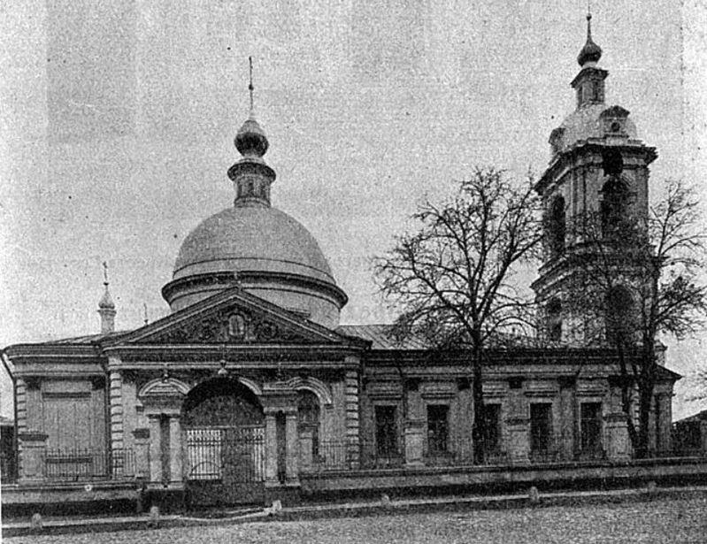
Église Sainte-Irène à Pokrovskoye avant la Révolution de 1917
Ayant terminé son chemin terrestre, un citoyen d'honneur héréditaire, l'ingénieur russe Ivan Strakhov, un homme gentil, sage et noble qui a préservé et transmis l'esprit de la Russie impériale aux générations suivantes, repose désormais dans le cimetière de Voskresensk.
A.Z.
NOTES ET RÉFÉRENCES
1. Le gymnase correspondant au lycée en France (ndlr)
Partager cette page